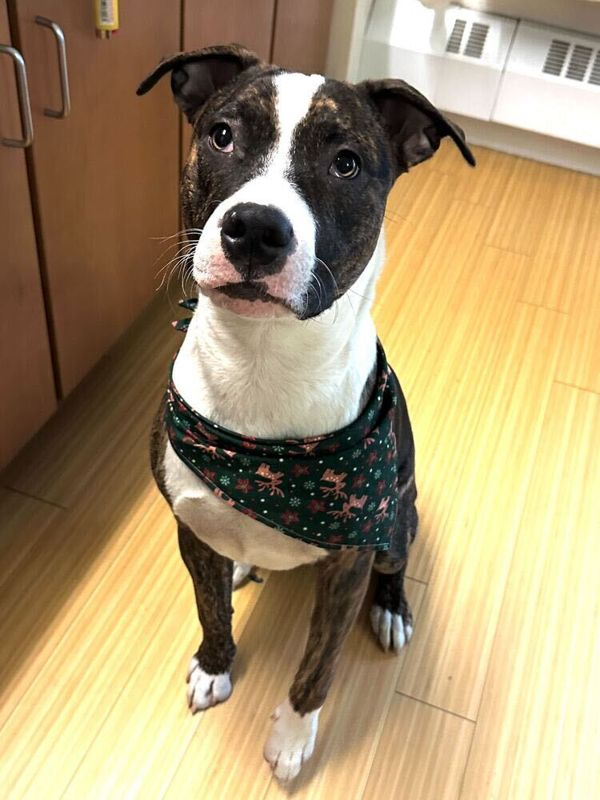

Full-time foster needed ASAPIslander
Islander is a loving, playful, silly boy who adores cuddles, treats, walks, and spending time with his people. He is potty trained, crate trained, and knows commands like sit, stay, and lie down. He is good with children and has lived successfully with other dogs. He walks well with some leash pulling and would benefit from continued guidance. No cats, please!
Apply to Foster Islander